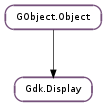

| Subclasses: | GdkX11.X11Display |
|---|
| static | get_default() |
| static | open(display_name) |
| static | open_default_libgtk_only() |
| beep() | |
| close() | |
| device_is_grabbed(device) | |
| flush() | |
| get_app_launch_context() | |
| get_default_cursor_size() | |
| get_default_group() | |
| get_default_screen() | |
| get_device_manager() | |
| get_event() | |
| get_maximal_cursor_size() | |
| get_n_screens() | |
| get_name() | |
| get_pointer() | |
| get_screen(screen_num) | |
| get_window_at_pointer() | |
| has_pending() | |
| is_closed() | |
| keyboard_ungrab(time_) | |
| list_devices() | |
| notify_startup_complete(startup_id) | |
| peek_event() | |
| pointer_is_grabbed() | |
| pointer_ungrab(time_) | |
| put_event(event) | |
| request_selection_notification(selection) | |
| set_double_click_distance(distance) | |
| set_double_click_time(msec) | |
| store_clipboard(clipboard_window, time_, targets) | |
| supports_clipboard_persistence() | |
| supports_composite() | |
| supports_cursor_alpha() | |
| supports_cursor_color() | |
| supports_input_shapes() | |
| supports_selection_notification() | |
| supports_shapes() | |
| sync() | |
| warp_pointer(screen, x, y) |
None
| Name | Parameters | Return | Description |
|---|---|---|---|
| closed | bool | The ::closed signal is emitted when the connection to the windowing system for display is closed. | |
| opened | The ::opened signal is emitted when the connection to the windowing system for display is opened. |
Bases: GObject.Object
Gdk.Display objects purpose are two fold:
Gdk.Display objects are the GDK representation of an X Display, which can be described as a workstation consisting of a keyboard, a pointing device (such as a mouse) and one or more screens. It is used to open and keep track of various Gdk.Screen objects currently instantiated by the application. It is also used to access the keyboard(s) and mouse pointer(s) of the display.
Most of the input device handling has been factored out into the separate Gdk.DeviceManager object. Every display has a device manager, which you can obtain using Gdk.Display.get_device_manager ().
| Returns: | a Gdk.Display, or None if there is no default display. |
|---|---|
| Return type: | Gdk.Display |
Gets the default Gdk.Display. This is a convenience function for gdk_display_manager_get_default_display (gdk_display_manager_get ()).
| Parameters: | display_name (str) – the name of the display to open |
|---|---|
| Returns: | a Gdk.Display, or None if the display could not be opened |
| Return type: | Gdk.Display |
Opens a display.
| Returns: | the default display, if it could be opened, otherwise None. |
|---|---|
| Return type: | Gdk.Display |
Opens the default display specified by command line arguments or environment variables, sets it as the default display, and returns it. Gdk.parse_args () must have been called first. If the default display has previously been set, simply returns that. An internal function that should not be used by applications.
Emits a short beep on display
Closes the connection to the windowing system for the given display, and cleans up associated resources.
| Parameters: | device (Gdk.Device) – a Gdk.Device |
|---|---|
| Returns: | True if there is a grab in effect for device. |
| Return type: | bool |
Returns True if there is an ongoing grab on device for display.
Flushes any requests queued for the windowing system; this happens automatically when the main loop blocks waiting for new events, but if your application is drawing without returning control to the main loop, you may need to call this function explicitely. A common case where this function needs to be called is when an application is executing drawing commands from a thread other than the thread where the main loop is running.
This is most useful for X11. On windowing systems where requests are handled synchronously, this function will do nothing.
| Returns: | a new Gdk.AppLaunchContext for display. Free with GObject.Object.unref () when done |
|---|---|
| Return type: | Gdk.AppLaunchContext |
Returns a Gdk.AppLaunchContext suitable for launching applications on the given display.
| Returns: | the default cursor size. |
|---|---|
| Return type: | int |
Returns the default size to use for cursors on display.
| Returns: | The default group leader window for display |
|---|---|
| Return type: | Gdk.Window |
Returns the default group leader window for all toplevel windows on display. This window is implicitly created by GDK. See Gdk.Window.set_group ().
| Returns: | the default Gdk.Screen object for display |
|---|---|
| Return type: | Gdk.Screen |
Get the default Gdk.Screen for display.
| Returns: | A Gdk.DeviceManager, or None. This memory is owned by GDK and must not be freed or unreferenced. |
|---|---|
| Return type: | Gdk.DeviceManager |
Returns the Gdk.DeviceManager associated to display.
| Returns: | the next Gdk.Event to be processed, or None if no events are pending. The returned Gdk.Event should be freed with Gdk.Event.free (). |
|---|---|
| Return type: | Gdk.Event |
Gets the next Gdk.Event to be processed for display, fetching events from the windowing system if necessary.
| Return type: | width: int, height: int |
|---|
Gets the maximal size to use for cursors on display.
| Returns: | number of screens. |
|---|---|
| Return type: | int |
Gets the number of screen managed by the display.
| Returns: | a string representing the display name. This string is owned by GDK and should not be modified or freed. |
|---|---|
| Return type: | str |
Gets the name of the display.
| Return type: | screen: Gdk.Screen, x: int, y: int, mask: Gdk.ModifierType |
|---|
Gets the current location of the pointer and the current modifier mask for a given display.
| Parameters: | screen_num (int) – the screen number |
|---|---|
| Returns: | the Gdk.Screen object |
| Return type: | Gdk.Screen |
Returns a screen object for one of the screens of the display.
| Returns: | the window under the mouse pointer, or None |
|---|---|
| Return type: | Gdk.Window, win_x: int, win_y: int |
Obtains the window underneath the mouse pointer, returning the location of the pointer in that window in win_x, win_y for screen. Returns None if the window under the mouse pointer is not known to GDK (for example, belongs to another application).
| Returns: | True if there are events ready to be processed. |
|---|---|
| Return type: | bool |
Returns whether the display has events that are waiting to be processed.
| Returns: | True if the display is closed. |
|---|---|
| Return type: | bool |
Finds out if the display has been closed.
| Parameters: | time_ (int) – a timestap (e.g Gdk.CURRENT_TIME ). |
|---|
Release any keyboard grab
| Returns: | a list of Gdk.Device |
|---|---|
| Return type: | [Gdk.Device] |
Returns the list of available input devices attached to display. The list is statically allocated and should not be freed.
| Parameters: | startup_id (str) – a startup-notification identifier, for which notification process should be completed |
|---|
Indicates to the GUI environment that the application has finished loading, using a given identifier.
GTK+ will call this function automatically for #GtkWindow with custom startup-notification identifier unless gtk_window_set_auto_startup_notification() is called to disable that feature.
| Returns: | a copy of the first Gdk.Event on the event queue, or None if no events are in the queue. The returned Gdk.Event should be freed with Gdk.Event.free (). |
|---|---|
| Return type: | Gdk.Event |
Gets a copy of the first Gdk.Event in the display ‘s event queue, without removing the event from the queue. (Note that this function will not get more events from the windowing system. It only checks the events that have already been moved to the GDK event queue.)
| Returns: | True if an active X pointer grab is in effect |
|---|---|
| Return type: | bool |
Test if the pointer is grabbed.
| Parameters: | time_ (int) – a timestap (e.g. Gdk.CURRENT_TIME ). |
|---|
Release any pointer grab.
| Parameters: | event (Gdk.Event) – a Gdk.Event. |
|---|
Appends a copy of the given event onto the front of the event queue for display.
| Parameters: | selection (Gdk.Atom) – the Gdk.Atom naming the selection for which ownership change notification is requested |
|---|---|
| Returns: | whether Gdk.EventOwnerChange events will be sent. |
| Return type: | bool |
Request Gdk.EventOwnerChange events for ownership changes of the selection named by the given atom.
| Parameters: | distance (int) – distance in pixels |
|---|
Sets the double click distance (two clicks within this distance count as a double click and result in a Gdk.EventType._2BUTTON_PRESS event). See also Gdk.Display.set_double_click_time (). Applications should not set this, it is a global user-configured setting.
| Parameters: | msec (int) – double click time in milliseconds (thousandths of a second) |
|---|
Sets the double click time (two clicks within this time interval count as a double click and result in a Gdk.EventType._2BUTTON_PRESS event). Applications should not set this, it is a global user-configured setting.
| Parameters: |
|
|---|
Issues a request to the clipboard manager to store the clipboard data. On X11, this is a special program that works according to the freedesktop clipboard specification, available at
http://www.freedesktop.org/Standards/clipboard-manager-spec.
| Returns: | True if the display supports clipboard persistance. |
|---|---|
| Return type: | bool |
Returns whether the speicifed display supports clipboard persistance; i.e. if it’s possible to store the clipboard data after an application has quit. On X11 this checks if a clipboard daemon is running.
| Returns: | True if windows may be composited. |
|---|---|
| Return type: | bool |
Returns True if Gdk.Window.set_composited () can be used to redirect drawing on the window using compositing.
Currently this only works on X11 with XComposite and XDamage extensions available.
| Returns: | whether cursors can have alpha channels. |
|---|---|
| Return type: | bool |
Returns True if cursors can use an 8bit alpha channel on display. Otherwise, cursors are restricted to bilevel alpha (i.e. a mask).
| Returns: | whether cursors can have multiple colors. |
|---|---|
| Return type: | bool |
Returns True if multicolored cursors are supported on display. Otherwise, cursors have only a forground and a background color.
| Returns: | True if windows with modified input shape are supported |
|---|---|
| Return type: | bool |
Returns True if gdk_window_input_shape_combine_mask() can be used to modify the input shape of windows on display.
| Returns: | whether Gdk.EventOwnerChange events will be sent. |
|---|---|
| Return type: | bool |
Returns whether Gdk.EventOwnerChange events will be sent when the owner of a selection changes.
| Returns: | True if shaped windows are supported |
|---|---|
| Return type: | bool |
Returns True if gdk_window_shape_combine_mask() can be used to create shaped windows on display.
Flushes any requests queued for the windowing system and waits until all requests have been handled. This is often used for making sure that the display is synchronized with the current state of the program. Calling Gdk.Display.sync () before Gdk.error_trap_pop () makes sure that any errors generated from earlier requests are handled before the error trap is removed.
This is most useful for X11. On windowing systems where requests are handled synchronously, this function will do nothing.
| Parameters: |
|
|---|
Warps the pointer of display to the point x,`y` on the screen screen, unless the pointer is confined to a window by a grab, in which case it will be moved as far as allowed by the grab. Warping the pointer creates events as if the user had moved the mouse instantaneously to the destination.
Note that the pointer should normally be under the control of the user. This function was added to cover some rare use cases like keyboard navigation support for the color picker in the #GtkColorSelectionDialog.